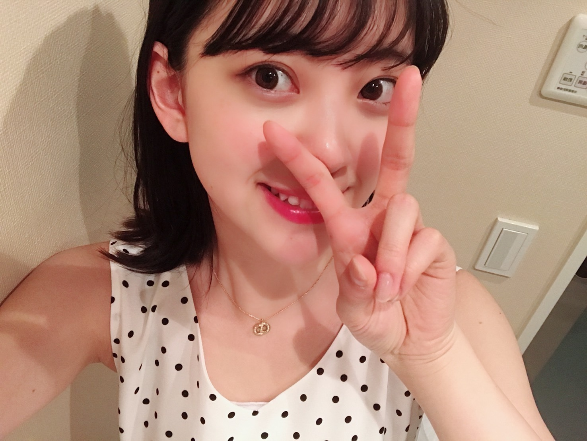
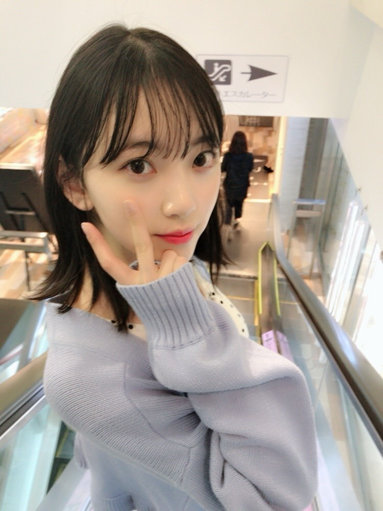
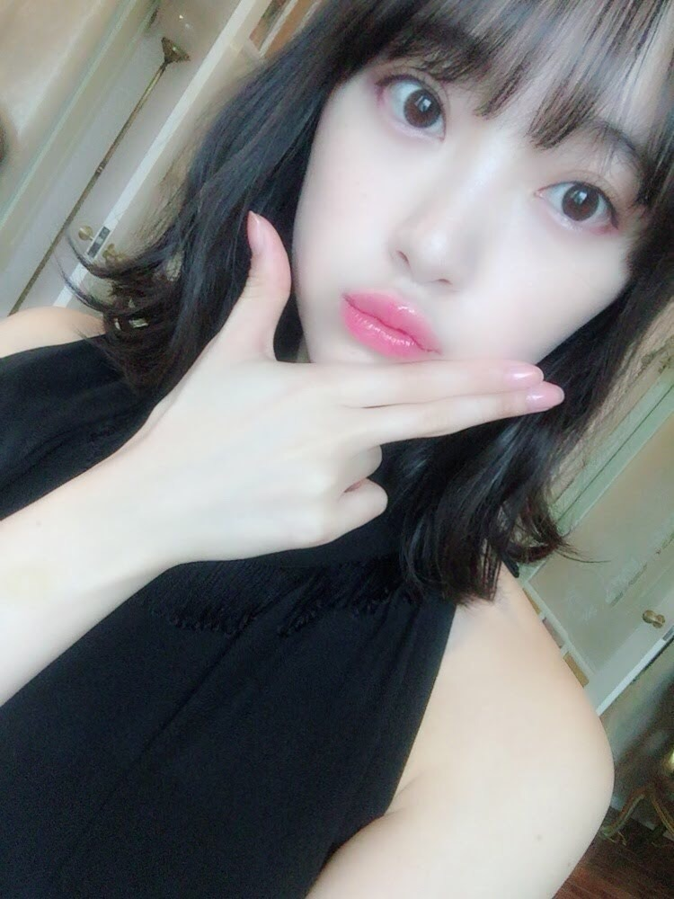
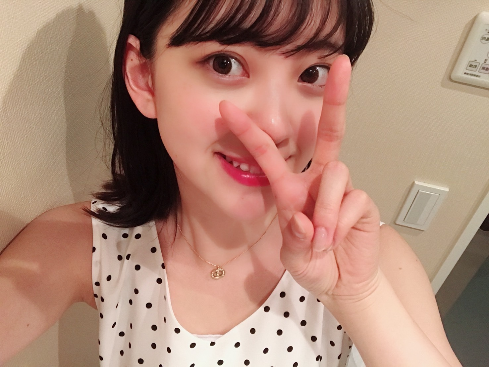
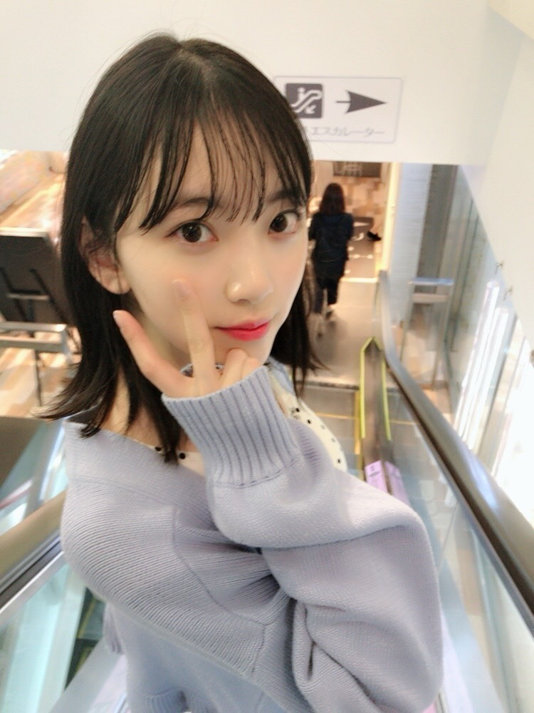
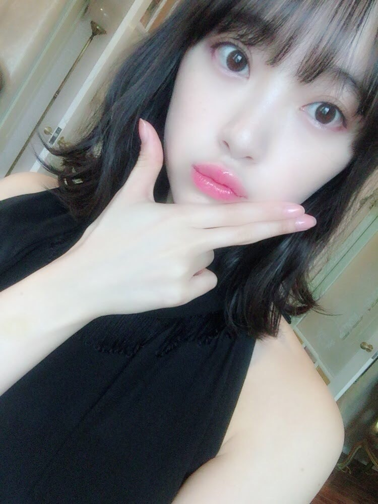

2018/0524Thuピースなきもち
撮影の合間に写真フォルダを見ていたら、
いろんなピースをしていることに
気づきました。



最後のは...？
何だろう
新たなピースですかね。
ピースということで^_^
どのピースがみなさんは
お気に入りですか？？
ピースシリーズ
増やしていこうっと！
いろんなピースをしていることに
気づきました。



最後のは...？
何だろう
新たなピースですかね。
ピースということで^_^
どのピースがみなさんは
お気に入りですか？？
ピースシリーズ
増やしていこうっと！
2018/05/24 15:12
コメント(449)
未央奈〜！こんばんは！
ピースなきもち✌️
昨日からテンション高いなぁ。と思ってたら旅行に行ったんだね。☺︎
お土産よろしく。
(ジョークです。
でた、色んなピースしてる。笑う。
それぞれ表情が違うのもいいね！
かわいっ。
最後のもピースなのか！笑
はて、どれがお気に入りかのぅ。。
やっぱり2枚目の写真かな。
ピースで顔が隠れちゃうぐらいめっちゃ楽しく撮影してるのが伝わってくる。笑
うーん、どの写真もかわいい！！✨
好きだよ。
今後もピースシリーズ楽しみ♪
(シリーズものだったんだ。笑
未央奈推しなら、、もちろん。
よし。ほじゃね〜〜。(^-^)
ピースなきもち✌️
昨日からテンション高いなぁ。と思ってたら旅行に行ったんだね。☺︎
お土産よろしく。
(ジョークです。
でた、色んなピースしてる。笑う。
それぞれ表情が違うのもいいね！
かわいっ。
最後のもピースなのか！笑
はて、どれがお気に入りかのぅ。。
やっぱり2枚目の写真かな。
ピースで顔が隠れちゃうぐらいめっちゃ楽しく撮影してるのが伝わってくる。笑
うーん、どの写真もかわいい！！✨
好きだよ。
今後もピースシリーズ楽しみ♪
(シリーズものだったんだ。笑
未央奈推しなら、、もちろん。
よし。ほじゃね〜〜。(^-^)
全部いいけど！
3枚目！
3枚目！
どのピースも最高〜〜‼︎‼︎
でも特にだったら4枚目かなぁ
ピース（平和）がいつまでも続けばなぁ〜
おやすみおな
でも特にだったら4枚目かなぁ
ピース（平和）がいつまでも続けばなぁ〜
おやすみおな
ブログ更新ありがとう。
最後のピースいいですね。
今日も頑張って行きましょう！
最後のピースいいですね。
今日も頑張って行きましょう！
頭の上に両手でピースしてほしいかなぁ( ´∀｀)
これからいろんなピースを生み出してほしい笑
乃木坂のピース大使

これからいろんなピースを生み出してほしい笑
乃木坂のピース大使
みおなが好きなピースはどれ❔❔❔❔❔❔❔
教えて❗️❗️❗️❗️❗️❗️❗️❗️❗️❗️❗️❗️❗️
握手会で聞くわ
楽しみやわー♥️♥️♥️♥️♥️♥️
大阪府の高校１年 りゅうへい
教えて❗️❗️❗️❗️❗️❗️❗️❗️❗️❗️❗️❗️❗️
握手会で聞くわ
楽しみやわー♥️♥️♥️♥️♥️♥️
大阪府の高校１年 りゅうへい
未央奈～こんばんは！
ぽてとです！
ピースな写真シリーズ良いよね！
自分は２枚目の写真がお気に入りかな♪
ぽてとです！
ピースな写真シリーズ良いよね！
自分は２枚目の写真がお気に入りかな♪
未央奈！
どのピースも可愛いけど、3番目の写真のやつが一番いいかな。
顔だけ総選挙、未央奈に投票したよ！
どのピースも可愛いけど、3番目の写真のやつが一番いいかな。
顔だけ総選挙、未央奈に投票したよ！
全部かわいい
掘っちゃん、ブログ更新ありがとう。
どれも可愛いいけど、最後のピースが好きかな。
どれも可愛いいけど、最後のピースが好きかな。
ほりっぴ～、ナンチです♪
ブログ更新ありがとう～
裏手ピースが昔から大好きなんだよね
可愛くない
レコメン投票、おまかせあれ
ブログ更新ありがとう～
裏手ピースが昔から大好きなんだよね
可愛くない
レコメン投票、おまかせあれ
こんばんは。
ただのピースかと思ってたら、いろんな種類があるんだね(笑)
裏向きのピースは中東とかではやっちゃダメって聞いた事があるよ。気をつけてね。
最後のピースをしてるみおなちゃんは、なんか大物に見えるよ。なぜだろう？(笑)
じゃあね。
ただのピースかと思ってたら、いろんな種類があるんだね(笑)
裏向きのピースは中東とかではやっちゃダメって聞いた事があるよ。気をつけてね。
最後のピースをしてるみおなちゃんは、なんか大物に見えるよ。なぜだろう？(笑)
じゃあね。
おつおつさま〜＼(^o^)／
エスカレーターで振り向きピース＼／
買い物デート中の光景みたいだから

…たぶん、ピース以外のポーズでも選ぶさ〜
エスカレーターで振り向きピース＼
買い物デート中の光景みたいだから
…たぶん、ピース以外のポーズでも選ぶさ〜
今週のレコメン聴いたよ～
のりさんが着てたゾウさんＴシャツいいね♪
かわいい(*･ω･)ﾉ
のりさんが着てたゾウさんＴシャツいいね♪
かわいい(*･ω･)ﾉ
未央奈ちゃん、こんばんは(^o^)/
俺は3枚目の画像が好きかな( ＾∀＾)
写真自体もピースも3枚目が１番良いです( ＾∀＾)
セブンイレブンの乃木坂１番くじをやったらF賞の未央奈のフォトコレクションが当たりましたよ( ＾∀＾)
俺は3枚目の画像が好きかな( ＾∀＾)
写真自体もピースも3枚目が１番良いです( ＾∀＾)
セブンイレブンの乃木坂１番くじをやったらF賞の未央奈のフォトコレクションが当たりましたよ( ＾∀＾)
堀ちゃん！(*´-`)
改め未央奈！(*´꒳`*)
こんばんはー。今日(昨日)はモバメいっぱいありがと〜♬せっかくなのでブログコメントと、モバコメントを分けて書き込みしようかな！
はうー、堀ちゃんの写真フォルダ見てみたい〜(>_<)沢山の見たことのない未央奈が居るんだろうな〜。
でもそっか、自撮りはブログ用とかがメインだろうから、意外と素の未央奈探しなら他の子のフォルダ見たら居るのかな？(๑>◡<๑)
堀ちゃん自身がいなくても、堀ちゃんの写真フォルダを見たら未央奈の見ている風景とか、何が好きとか、どんな思い出を持って居るのかとかが分かってより本当の未央奈を知れるのだろうな〜。(*´꒳`*)
見たい。(´･ω･`)でも我慢。(´･ω･`)
わたしの写真フォルダは意外と動物と花がかなりを占めています！花を見かけたらかなりの頻度で写真撮りますね〜。
私のこだわりポイントは、人間が普段見ない高さや角度からの写真構図でよく撮影します。(*´-`)地面や、水面すれすれから撮影したり、木の撮影なら、木に登る虫の視点から見た景色とかをよく撮影します！！
ん、長くなりそう笑
一旦CMでーす。(タモさん風に
改め未央奈！(*´꒳`*)
こんばんはー。今日(昨日)はモバメいっぱいありがと〜♬せっかくなのでブログコメントと、モバコメントを分けて書き込みしようかな！
はうー、堀ちゃんの写真フォルダ見てみたい〜(>_<)沢山の見たことのない未央奈が居るんだろうな〜。
でもそっか、自撮りはブログ用とかがメインだろうから、意外と素の未央奈探しなら他の子のフォルダ見たら居るのかな？(๑>◡<๑)
堀ちゃん自身がいなくても、堀ちゃんの写真フォルダを見たら未央奈の見ている風景とか、何が好きとか、どんな思い出を持って居るのかとかが分かってより本当の未央奈を知れるのだろうな〜。(*´꒳`*)
見たい。(´･ω･`)でも我慢。(´･ω･`)
わたしの写真フォルダは意外と動物と花がかなりを占めています！花を見かけたらかなりの頻度で写真撮りますね〜。
私のこだわりポイントは、人間が普段見ない高さや角度からの写真構図でよく撮影します。(*´-`)地面や、水面すれすれから撮影したり、木の撮影なら、木に登る虫の視点から見た景色とかをよく撮影します！！
ん、長くなりそう笑
一旦CMでーす。(タモさん風に
未央奈さんブログ更新ありがとう！どの画像も全部キレイでカワイイです‼︎未央奈さんは絶対裏切らないもんね。信じて応援してます。おやすみおなさん
未央奈！(*´꒳`*)
続きをばー(*´꒳`*)
どのピースが好きか？ですか。
写真映りとか無しで、純粋にピースとして評価して1位を決めてみるよー。(*´-`)
そして、注目の第…1位はっ！！！
ズッタン♬ズッズッターン♬
ズズタタズズターン♬
ズッタン♬ズッズッターン♬
ズズタタズズターン♬
ズッタン♬ズッズッターン♬
ズズタタズズターン♬
デレレレ、レレレレ、レレレレレッ♬
乾いた風にっかき消されてっ♬(略
設楽:
あ、ゴメンゴメン、ボウイ、ボウイのビーブルー歌っちゃったww
日村:
第1位は、乾いた風にかき消されてですっ！！
…未央奈様。茶番にお付き合い有難うございます。笑
本当に1番好きなピースはエスカレーターでの振り返り萌え袖ピースですね！(๑>◡<๑)
もしこのシチュエーションで堀ちゃんにぴーされたらもうね、
指ぎゅってやって握り潰します。(おいw
潰しはしないけど、分かるかな〜。堀ちゃんがピースしようとしてるのに、指ぎゅっとして邪魔したくなる。これはそんなピースです！(意味不
続きをばー(*´꒳`*)
どのピースが好きか？ですか。
写真映りとか無しで、純粋にピースとして評価して1位を決めてみるよー。(*´-`)
そして、注目の第…1位はっ！！！
ズッタン♬ズッズッターン♬
ズズタタズズターン♬
ズッタン♬ズッズッターン♬
ズズタタズズターン♬
ズッタン♬ズッズッターン♬
ズズタタズズターン♬
デレレレ、レレレレ、レレレレレッ♬
乾いた風にっかき消されてっ♬(略
設楽:
あ、ゴメンゴメン、ボウイ、ボウイのビーブルー歌っちゃったww
日村:
第1位は、乾いた風にかき消されてですっ！！
…未央奈様。茶番にお付き合い有難うございます。笑
本当に1番好きなピースはエスカレーターでの振り返り萌え袖ピースですね！(๑>◡<๑)
もしこのシチュエーションで堀ちゃんにぴーされたらもうね、
指ぎゅってやって握り潰します。(おいw
潰しはしないけど、分かるかな〜。堀ちゃんがピースしようとしてるのに、指ぎゅっとして邪魔したくなる。これはそんなピースです！(意味不
未央奈～☆☆
５つとも未央奈だから、どのピースも好きだよ！
その中でも、3つ目の振り向きざまのピースは可愛いなー
5つ目の新たなピースは、未央奈の指が凄く綺麗で見とれちゃう。
５つとも未央奈だから、どのピースも好きだよ！
その中でも、3つ目の振り向きざまのピースは可愛いなー
5つ目の新たなピースは、未央奈の指が凄く綺麗で見とれちゃう。
2枚目のやんちゃなピースが好き♡
でも…全部好き♡
でも…全部好き♡
未央奈っ！(*´꒳`*)
さっきのコメントに入れるべきだった気がするけど、私からも一つピースのやり方を教えよう！！
…と思ったのですが、教える前に念のためググったら、国によってはあまり良くないピースサインでした。⊂((・⊥・))⊃
話す前に気づけて良かった良かったw
堀ちゃんも海外でピースする時は少し気を使つけて見てねー？？(*´-`)
サザエさん、しんちゃん。どちらも家族テーマな漫画なのかなって。(*´-`) 堀ちゃんは実は甘えたがりで、寂しがりやだったりするのかな？笑
顔だけ総選挙！もちろん未央奈に票を入れたよ〜(>_<)堀ちゃんに信じてもらえるなんて光栄です！！(*´꒳`*)
逆に堀ちゃんの事も信じていつも応援しているからね、お仕事頑張ってねー♬
時間が良いので今日はここまでー
おやすみおな。(*´-`)
さっきのコメントに入れるべきだった気がするけど、私からも一つピースのやり方を教えよう！！
…と思ったのですが、教える前に念のためググったら、国によってはあまり良くないピースサインでした。⊂((・⊥・))⊃
話す前に気づけて良かった良かったw
堀ちゃんも海外でピースする時は少し気を使つけて見てねー？？(*´-`)
サザエさん、しんちゃん。どちらも家族テーマな漫画なのかなって。(*´-`) 堀ちゃんは実は甘えたがりで、寂しがりやだったりするのかな？笑
顔だけ総選挙！もちろん未央奈に票を入れたよ〜(>_<)堀ちゃんに信じてもらえるなんて光栄です！！(*´꒳`*)
逆に堀ちゃんの事も信じていつも応援しているからね、お仕事頑張ってねー♬
時間が良いので今日はここまでー
おやすみおな。(*´-`)
堀さん、こんばんは。
二枚目の写真は歯が可愛くて子供っぽく見えます。もし堀さんが我が娘だったら、いつも心配ばかりしてしまうんでしょうね。
ピースにも向きとかで色んな種類あるんですね。最後のは大人のピースってことでしょうか。
ところで、お願いなんですけど、もし時間が合うなら相楽さんとSHOWROOMで映画の話してるところが見たいです。
ついでに僕が最近見て良かった映画は、「君の名前で僕を呼んで」「フロリダプロジェクト」です。両方とも、この経験があれば主人公にこの先何が起こっても大丈夫だって思って泣きました。ちなみに「フロリダ」の方は是枝監督の「誰も知らない」を参考にしたそうです。
二枚目の写真は歯が可愛くて子供っぽく見えます。もし堀さんが我が娘だったら、いつも心配ばかりしてしまうんでしょうね。
ピースにも向きとかで色んな種類あるんですね。最後のは大人のピースってことでしょうか。
ところで、お願いなんですけど、もし時間が合うなら相楽さんとSHOWROOMで映画の話してるところが見たいです。
ついでに僕が最近見て良かった映画は、「君の名前で僕を呼んで」「フロリダプロジェクト」です。両方とも、この経験があれば主人公にこの先何が起こっても大丈夫だって思って泣きました。ちなみに「フロリダ」の方は是枝監督の「誰も知らない」を参考にしたそうです。
堀ちゃん、こんばんは☆
色んなピースをしてる堀ちゃん、ありがとうございます♪
個人的には、２枚目のシャキッン！としすぎていないピースの感じと写真の雰囲気が好きです(*´▽｀*)
ここには載っていないけど、５月の真ん中辺りに送ってくれたモバメの写真でしてるピースが凄く可愛くてお気に入りです☆
恥ずかしいから明確な日にちは言いません(*'▽')
そして、裏ピース自体があまり好きではないです(；ﾟДﾟ)
裏ピースより、チャンピオンさんの表紙とグラビアを撮影した時のオフショを送ってくれた時のようなしっかりとピースしてくれてる姿が可愛くて好きです☆
でも、これは個人的な好みなので全く気にしないで下さい☆
堀ちゃんが可愛い事には変わりないです(*´ω｀*)
ではでは、遅くなりましたがarさん6月号の感想をここで失礼します☆
よくばりで食いしん坊の未央奈さんのデニム14DAYS♪
DAY.1から可愛いが降臨してるんです☆
服装、髪型、足の爪まで可愛いんですよ(*´▽｀*)
でも、ここでDAY.3に強敵が現れるんです！！
街でこんな子おったら天使かと思って二度見どころではない！！
今まで自覚なかったけど、女の子のハット姿は結構好きなのかもしれないと思った１枚でした(*'ω'*)
そして、一瞬スルーしそうになるかと思いきやのDAY.6の格好が良かった☆
ラフな格好？？いや、可愛いからラフとか、何か？
ラフな感じでこんなに可愛かったら、いや、本当(*ﾉωﾉ)
DAY.7とDAY.8は色合いとかが凄く可愛いんですよ、ですがそれを上回る神が降臨するのです☆
はい、来ました。今、来ました。
そうです、今月号のイチオシはDAY.14の神様･････いや、未央奈様です(*´▽｀*)
いや、どんだけだよ、どんだけの鼻血を流せば許してくれるんだよ、arさんは(/ω＼)
可愛すぎるでしょ、この堀ちゃん☆
こんなに可愛い子が、やっほ～待ってた～♡とか言ってニコニコしながらこっちに来ただけで、幸せでしょ☆
この世の中の不満とか日ごろの疲れとか、全てどうでもよくなっちゃうよね☆
髪型最高☆服装も可愛い☆色合いも好きな感じ☆
そして、堀ちゃん可愛い☆最高だよ☆
他のDAYSも可愛いには違いないけど、その中でも自分の好みはあるんですのん(*'ω'*)
そこは個人差がありますのでご了承下さい☆
そして、お寿司を握っていたかと思っていた堀ちゃんが武道の道へ☆
しかも、合気道です☆
素敵です、合気道(*´ω｀*)
相手の力を利用して受け流すイメージが昔から格好いいなとは思っていたけど、ここまでの人生で合気道に携わる機会は訪れなかったなぁ☆
これからの人生ではまだ可能性はあるかもです☆
そんな合気道のページ、めっちゃ笑顔の堀ちゃんに出会えて髪型が中国拳法とかの使い手を彷彿とさせる可愛い髪型で、このページも癒されます(*'ω'*)
もう撮影が終わったと噂の7月号、今から楽しみです♪
最後に、レコメン！アイドル顔だけ総選挙は、勿論です☆
任せて下さい、堀ちゃん☆
えぇ、投票しておきます☆
ん？誰にって？それは教えません☆
ですが、決して裏切らない事だけは確かです☆
何てったって、未央奈推しですから☆
(このメールくる前に、既に堀ちゃんの名前を入れて投票したですのん)
慶次郎でした。
色んなピースをしてる堀ちゃん、ありがとうございます♪
個人的には、２枚目のシャキッン！としすぎていないピースの感じと写真の雰囲気が好きです(*´▽｀*)
ここには載っていないけど、５月の真ん中辺りに送ってくれたモバメの写真でしてるピースが凄く可愛くてお気に入りです☆
恥ずかしいから明確な日にちは言いません(*'▽')
そして、裏ピース自体があまり好きではないです(；ﾟДﾟ)
裏ピースより、チャンピオンさんの表紙とグラビアを撮影した時のオフショを送ってくれた時のようなしっかりとピースしてくれてる姿が可愛くて好きです☆
でも、これは個人的な好みなので全く気にしないで下さい☆
堀ちゃんが可愛い事には変わりないです(*´ω｀*)
ではでは、遅くなりましたがarさん6月号の感想をここで失礼します☆
よくばりで食いしん坊の未央奈さんのデニム14DAYS♪
DAY.1から可愛いが降臨してるんです☆
服装、髪型、足の爪まで可愛いんですよ(*´▽｀*)
でも、ここでDAY.3に強敵が現れるんです！！
街でこんな子おったら天使かと思って二度見どころではない！！
今まで自覚なかったけど、女の子のハット姿は結構好きなのかもしれないと思った１枚でした(*'ω'*)
そして、一瞬スルーしそうになるかと思いきやのDAY.6の格好が良かった☆
ラフな格好？？いや、可愛いからラフとか、何か？
ラフな感じでこんなに可愛かったら、いや、本当(*ﾉωﾉ)
DAY.7とDAY.8は色合いとかが凄く可愛いんですよ、ですがそれを上回る神が降臨するのです☆
はい、来ました。今、来ました。
そうです、今月号のイチオシはDAY.14の神様･････いや、未央奈様です(*´▽｀*)
いや、どんだけだよ、どんだけの鼻血を流せば許してくれるんだよ、arさんは(/ω＼)
可愛すぎるでしょ、この堀ちゃん☆
こんなに可愛い子が、やっほ～待ってた～♡とか言ってニコニコしながらこっちに来ただけで、幸せでしょ☆
この世の中の不満とか日ごろの疲れとか、全てどうでもよくなっちゃうよね☆
髪型最高☆服装も可愛い☆色合いも好きな感じ☆
そして、堀ちゃん可愛い☆最高だよ☆
他のDAYSも可愛いには違いないけど、その中でも自分の好みはあるんですのん(*'ω'*)
そこは個人差がありますのでご了承下さい☆
そして、お寿司を握っていたかと思っていた堀ちゃんが武道の道へ☆
しかも、合気道です☆
素敵です、合気道(*´ω｀*)
相手の力を利用して受け流すイメージが昔から格好いいなとは思っていたけど、ここまでの人生で合気道に携わる機会は訪れなかったなぁ☆
これからの人生ではまだ可能性はあるかもです☆
そんな合気道のページ、めっちゃ笑顔の堀ちゃんに出会えて髪型が中国拳法とかの使い手を彷彿とさせる可愛い髪型で、このページも癒されます(*'ω'*)
もう撮影が終わったと噂の7月号、今から楽しみです♪
最後に、レコメン！アイドル顔だけ総選挙は、勿論です☆
任せて下さい、堀ちゃん☆
えぇ、投票しておきます☆
ん？誰にって？それは教えません☆
ですが、決して裏切らない事だけは確かです☆
何てったって、未央奈推しですから☆
(このメールくる前に、既に堀ちゃんの名前を入れて投票したですのん)
慶次郎でした。
みおな！！タンポポだけども～♪♪♪
( ；∀；)
可愛い！！！
みおな可愛い！！！
可愛いすぎたけども～♪♪♪
大好きやからね！！！
みおなはタンポポの人生のキキだよ！！タンポポはジジだよ！！
みおな猫アレルギーだけどね！( ；∀；)
青森に行った時のマグロの帽子？かぶってー
堀ちゃん、かわいい〜
エスカレーターでの振り向きピースに彼女感、、好きですー
未央奈ちゃん、ひろっしーです！コメント投稿439回目です！
前回はブログ「コーヒーと牛乳。」にモバメとブログの感想を書きました！
時間→「No.390 2018年5月24日 01:32」
ブログ更新ありがとうございます！
ピース写真も沢山ありがとうございます！
どれも凄く可愛くて迷いましたが、どのピースかと言われたらエスカレーターの3枚目かな！
理由は、自分だけにピースをされているような感じがしたし、エスカレーターでっていうのが良かったからです！
あと、5枚目の新たなピースの写真も追加で！
それにしても5枚目の写真肌白いですね！指もスラッと長くて綺麗だし！オフショルだし(嬉)
ピースシリーズ、増やしていくに大賛成です！
モバメも毎日ありがとうございます！
朝からサザエさん観てたんですね！しんちゃん好きなのは知ってたけどサザエさんも好きなんですね！知らんだ～(恥) 相当好きなんですね！お母さんも言うのも分かります(笑)
しんちゃんは時々観てるのですが、サザエさんの放送してる時間はせっかくグルメを観てるのでサザエさんは全然観れてません！かと言ってせっかくグルメも譲れないしな～(迷)
あと「レコメン！女性アイドル顔だけ総選挙2018」ですが、もちろん未央奈ちゃんに清き1票を入れさせて頂きました！来月が楽しみ！
久保ちゃんのブログにあったツーショット写真
はい！ひょっほりはん(笑) めっちゃ可愛い～！
ここまで読んで頂きありがとうございました！
毎日お仕事お疲れ様です！体調にはくれぐれも気を付けて頑張ってくださいね！
ではでは！
前回はブログ「コーヒーと牛乳。」にモバメとブログの感想を書きました！
時間→「No.390 2018年5月24日 01:32」
ブログ更新ありがとうございます！
ピース写真も沢山ありがとうございます！
どれも凄く可愛くて迷いましたが、どのピースかと言われたらエスカレーターの3枚目かな！
理由は、自分だけにピースをされているような感じがしたし、エスカレーターでっていうのが良かったからです！
あと、5枚目の新たなピースの写真も追加で！
それにしても5枚目の写真肌白いですね！指もスラッと長くて綺麗だし！オフショルだし(嬉)
ピースシリーズ、増やしていくに大賛成です！
モバメも毎日ありがとうございます！
朝からサザエさん観てたんですね！しんちゃん好きなのは知ってたけどサザエさんも好きなんですね！知らんだ～(恥) 相当好きなんですね！お母さんも言うのも分かります(笑)
しんちゃんは時々観てるのですが、サザエさんの放送してる時間はせっかくグルメを観てるのでサザエさんは全然観れてません！かと言ってせっかくグルメも譲れないしな～(迷)
あと「レコメン！女性アイドル顔だけ総選挙2018」ですが、もちろん未央奈ちゃんに清き1票を入れさせて頂きました！来月が楽しみ！
久保ちゃんのブログにあったツーショット写真
はい！ひょっほりはん(笑) めっちゃ可愛い～！
ここまで読んで頂きありがとうございました！
毎日お仕事お疲れ様です！体調にはくれぐれも気を付けて頑張ってくださいね！
ではでは！
未央奈ブログ更新ありがとう！
どれもかわいい〜♡
この前おぎゆかと行ってたディズニーの写真も載せて欲しい！！
レコメンの顔だけ総選挙、もちろん未央奈に投票した！♡好きなのは顔だけじゃないけどもちろん顔も大好き〜
どれもかわいい〜♡
この前おぎゆかと行ってたディズニーの写真も載せて欲しい！！
レコメンの顔だけ総選挙、もちろん未央奈に投票した！♡好きなのは顔だけじゃないけどもちろん顔も大好き〜
未央奈ちゃん、おはよう。
どのピースもカワイイし、全部好きだよ。
もうすぐ神宮ライブの申込み、当てて未央奈ちゃんとアイコンタクトしたいです。
では週末のお大事に行ってきますね。
乃木坂46と頑張ってるcuteでsmartな未央奈ちゃんを応援しています。
どのピースもカワイイし、全部好きだよ。
もうすぐ神宮ライブの申込み、当てて未央奈ちゃんとアイコンタクトしたいです。
では週末のお大事に行ってきますね。
乃木坂46と頑張ってるcuteでsmartな未央奈ちゃんを応援しています。
未央ちゃん
ブログ更新ありがとう
写真たくさん嬉しい
ピースシリーズ
良き企画
映えのやつまた、
映えの(笑)
体調管理
気を付けてね
ブログ更新ありがとう
写真たくさん嬉しい
ピースシリーズ
良き企画
映えのやつまた、
映えの(笑)
体調管理
気を付けてね
1番最後のが良い！笑
洋服かわいすぎ！！！
いつも応援してます！！
洋服かわいすぎ！！！
いつも応援してます！！
未央奈ちゃん更新ありがとー！
エスカレーターでの振り向きピース
めっさ可愛い！
これで今日も１日頑張れそうです！
頑張ってこー！！
エスカレーターでの振り向きピース
めっさ可愛い！
これで今日も１日頑張れそうです！
頑張ってこー！！
未央奈ちゃんのピースサインかわいい
ブログ更新ありがとう✨
ピースをすると気分が楽になれるから良き♪
どのピースも好きだけど
日常の中の一瞬を切り取ったような3枚目のピースが特に好きかな☺︎
ピースシリーズ待ってまーす(^^)
ピースをすると気分が楽になれるから良き♪
どのピースも好きだけど
日常の中の一瞬を切り取ったような3枚目のピースが特に好きかな☺︎
ピースシリーズ待ってまーす(^^)
かわいい！
ブログ楽しみにしてます
ブログ楽しみにしてます
1枚目！
最後のやつめちゃ美人さん✨
次の更新も楽しみにしてます！！
最後のやつめちゃ美人さん✨
次の更新も楽しみにしてます！！
金の信長像行ってみたい！
どんなのかな？教えてー
どんなのかな？教えてー
みおなちゃんかわいい(*≧з≦)
堀ちゃんブログありがとー。
レコメン面白かったです
3枚目のピースが好きです！
レコメン面白かったです
3枚目のピースが好きです！
かわいい！
ブログ更新ありがとー(*´ｰ`*人)
どれも可愛いけど特に3枚目の萌え袖ピースやばし…(* ^ 艸^)
どれも可愛いけど特に3枚目の萌え袖ピースやばし…(* ^ 艸^)
ブログの更新をありがとう！
1枚目かな、2枚目かな
何でも良いと思う、未央奈ちゃんである限り。
1枚目かな、2枚目かな
何でも良いと思う、未央奈ちゃんである限り。
3番目が好き♪＼(^o^)／
最後のもイイかなー？(^_^;)
最後のもイイかなー？(^_^;)
堀さんのブログは楽しくて勉強になります。堀さんは人々の心に、あまねく灯り照らしてくれる天照女神様です。
未央奈ちゃんブログ更新ありがとう！♡
今日までテストだったから未央奈ちゃんの写真いっぱい嬉しい！！♡♡
どの写真もめっちゃかわいくて、ピース真似したい、、！
1.2.3枚目のワンピース？めっちゃかわいい！
ドット柄って着たら気分あがる♩︎
未央奈ちゃん外ハネ似合ってて羨ましい！
私も未央奈ちゃんみたいに色んな髪型やお洋服似合うように自分磨き頑張るね！
最近暑いし、お仕事忙しいと思うけど体調に気をつけて頑張ってね！応援してるよ〜〜！☺︎
ではまたね！
今日までテストだったから未央奈ちゃんの写真いっぱい嬉しい！！♡♡
どの写真もめっちゃかわいくて、ピース真似したい、、！
1.2.3枚目のワンピース？めっちゃかわいい！
ドット柄って着たら気分あがる♩︎
未央奈ちゃん外ハネ似合ってて羨ましい！
私も未央奈ちゃんみたいに色んな髪型やお洋服似合うように自分磨き頑張るね！
最近暑いし、お仕事忙しいと思うけど体調に気をつけて頑張ってね！応援してるよ〜〜！☺︎
ではまたね！
3枚目、好きだな〜(//∇//)
ピースは又吉さんが好きです！！！
更新ありがとう！
3枚目が・・・可愛すぎです！
でわでわ
3枚目が・・・可愛すぎです！
でわでわ


ピース写真は3枚目が好きだよ！
2枚目にあるネックレスカワイイね！